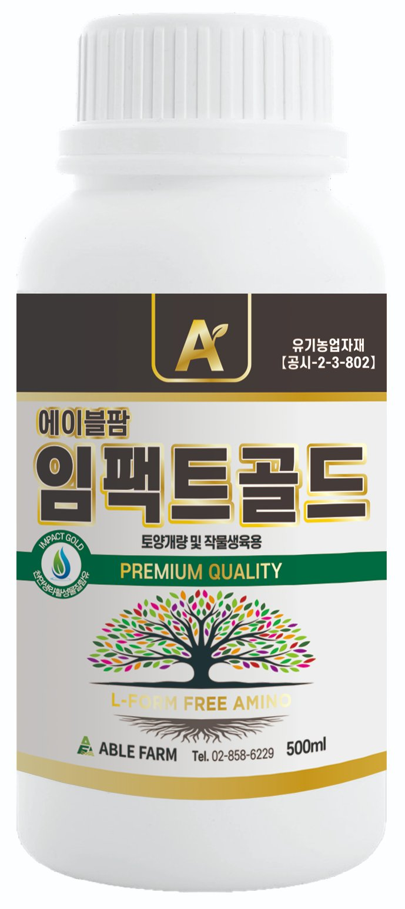
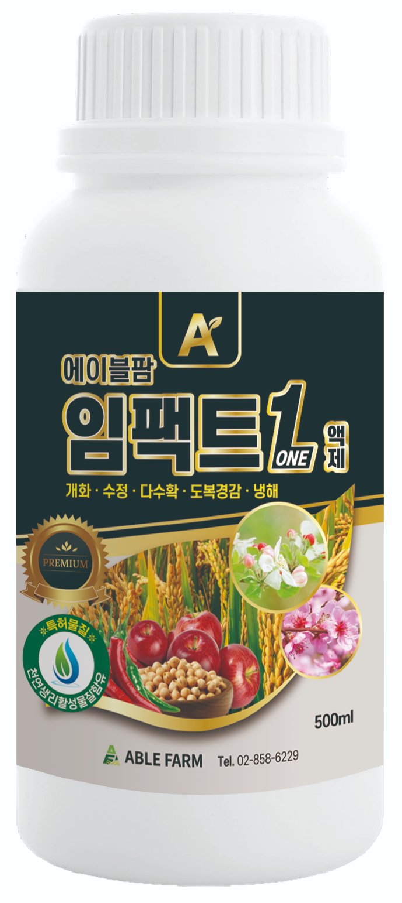
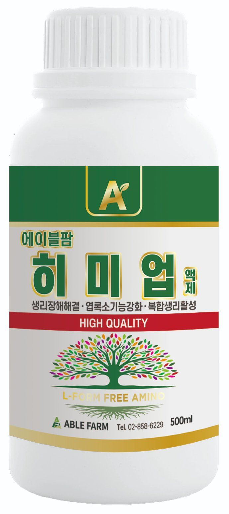

시설채소 안내 · 겨울 하우스 관리
겨울 하우스, 병의 범인은 밤 이슬
한눈에 보기
- 원인: 밤 기온 하강 → 비닐·잎에 결로 → 다습 지속
- 잘 생기는 병: 잿빛곰팡이병·노균병·흰가루병 농촌진흥청
- 야간 최저온도: 과채류 12℃, 엽채류 8℃ 이상 농촌진흥청
- 관리 순서: 야간 온도 유지 → 해 뜬 뒤 조금씩 환기 → 병든 잎·과실 즉시 제거 → 생육 부진 시 엽면시비
추위보다 무서운 건 물방울입니다
겨울 하우스는 밤에 바깥 기온이 크게 떨어지면 비닐 안쪽과 잎 표면에 이슬(결로)이 맺힙니다. 잎이 젖은 채 다습한 밤이 이어지면 잎 표면의 물막 속에서 곰팡이 포자가 싹을 틔워 잎 속으로 들어갑니다. 그래서 겨울 시설에서는 잿빛곰팡이병(과실·꽃에 잿빛 곰팡이)과 노균병(잎맥 따라 각진 노란 병반)이 많이 생깁니다. 환기가 나쁘거나 촘촘히 심어 습도가 높게 유지될 때, 아침·저녁 온도가 급하게 바뀔 때 특히 잘 생깁니다. 농촌진흥청 농사로
관리 순서
- 야간 최저온도 지키기보온·가온 장비를 보강해 밤 최저온도를 과채류 12℃, 엽채류 8℃ 이상으로 유지합니다. 찢어진 비닐은 바로 보수해 바람 피해와 열 손실을 막습니다. 농촌진흥청
- 해 뜬 뒤 조금씩 환기해가 떠 하우스 온도가 오르면 측창·천창을 조금씩 열어 습기를 뺍니다. 한꺼번에 크게 열어 온도가 급격히 떨어지지 않게 하고, 유동팬으로 공기를 돌립니다. 농촌진흥청 농사로
- 병든 잎·과실은 바로 제거병든 잎과 과실은 보이는 즉시 따서 하우스 밖으로 치우고, 병 발생 초기에 등록 약제로 방제합니다. 농촌진흥청
- 해충 유입 차단방충망과 끈끈이 트랩을 설치하고 천적을 활용해 총채벌레·가루이·진딧물·응애를 관리합니다. 농촌진흥청
- 탄산가스 시비는 오전에탄산가스 시비는 해 뜬 뒤부터 환기 전까지 3~4시간, 햇빛이 충분한 오전에 할 때 효과가 높습니다. 농촌진흥청
겨울 시설채소 영양 관리 — 뿌리 · 잎 · 꽃

임팩트골드 (뿌리)
혈액발효액·목초액·해조류추출물로 만든 토양개량·작물생육용 유기농업자재로, 하우스 흙에 관주하면 염류가 쌓인 뿌리 주변을 정돈하고 뿌리 발달·수세 회복을 돕습니다. 1,000배, 7~10일 간격 1~3회.

임팩트원
인산·가리·고토에 붕소·아연·망간과 L-아미노산을 더한 4종복합 엽면시비용 액상비료로, 저온기 생육이 더딘 과채류의 회복과 개화·수정 관리를 돕습니다. 엽면살포 1,000배.

히미업
아미노산 복합체와 아연·망간·붕소·철 등 미량요소가 환경 스트레스로 옅어진 잎 색과 광합성 활력을 되살리도록 돕습니다. 엽면살포 1,000배.
꼭 알아두세요. 영양제는 병을 막는 약이 아닙니다. 겨울 하우스 병 관리는 야간 온도 유지·환기·병든 잎 제거가 기본이고, 병은 등록 약제로 방제합니다. 영양 관리는 추위로 지친 작물의 생육 회복을 돕는 보조 수단입니다. 겨울엔 맑은 날 오전에 뿌려 저녁 전에 잎이 마르게 하세요(농촌진흥청 현장기술지원 — 매일 오후 엽면시비로 잎 가장자리 장해가 생긴 사례).
뿌리 · 잎 · 꽃 관리 영상 (임팩트골드 · 히미업 · 임팩트원)
쇼츠 내용에 이어, 겨울 하우스에서 뿌리는 임팩트골드(관주), 잎은 히미업, 꽃은 임팩트원으로 관리하는 방법과 사용법을 1분 48초로 정리했습니다.
자주 묻는 질문
겨울 하우스 밤 온도는 몇 도로 맞춰야 하나요?
야간 최저온도를 과채류(토마토·오이·딸기 등)는 12℃ 이상, 엽채류는 8℃ 이상으로 관리합니다(농촌진흥청). 찢어진 비닐은 바로 보수해 열이 새지 않게 하세요.
하우스 비닐에 물방울이 맺히면 왜 문제인가요?
밤에 맺힌 이슬로 잎이 오래 젖고 다습한 상태가 이어지면 잿빛곰팡이병·노균병 같은 병이 생기기 쉽습니다(농촌진흥청 농사로).
겨울에도 환기를 해야 하나요?
네. 해가 뜬 뒤 온도가 오르면 창을 조금씩 열어 습기를 뺍니다. 한꺼번에 크게 열어 온도가 급격히 떨어지지 않게 주의하세요.
추위로 생육이 더딘 시설채소는 어떻게 관리하나요?
온도·습도 관리가 먼저이고, 생육이 더딘 작물은 엽면시비로 영양을 보충해 회복을 도울 수 있습니다. 임팩트원(4종복합 엽면시비용)과 히미업(아미노산 영양제)을 쓸 수 있습니다.
근거 자료
- 농촌진흥청, 주간농사정보 제44호 (2026.11.2.~11.8.) — 시설채소 적정온도(야간 최저 과채류 12℃·엽채류 8℃ 이상), 비닐 보수, 주요 병해충(노균병·흰가루병·총채벌레·가루이·응애 등) 관리, 탄산가스 시비 — 농사로
- 농촌진흥청 농사로, 병해충 정보 — 잿빛곰팡이병(저온·다습, 환기 불량·밀식 시 다발, 환기·습도 관리)·노균병(다습·밤낮 온도차 클 때 다발) 발생 환경과 방제
- 영상: 에팜티비 「겨울 하우스 병의 범인은 밤 이슬」 — YouTube Shorts